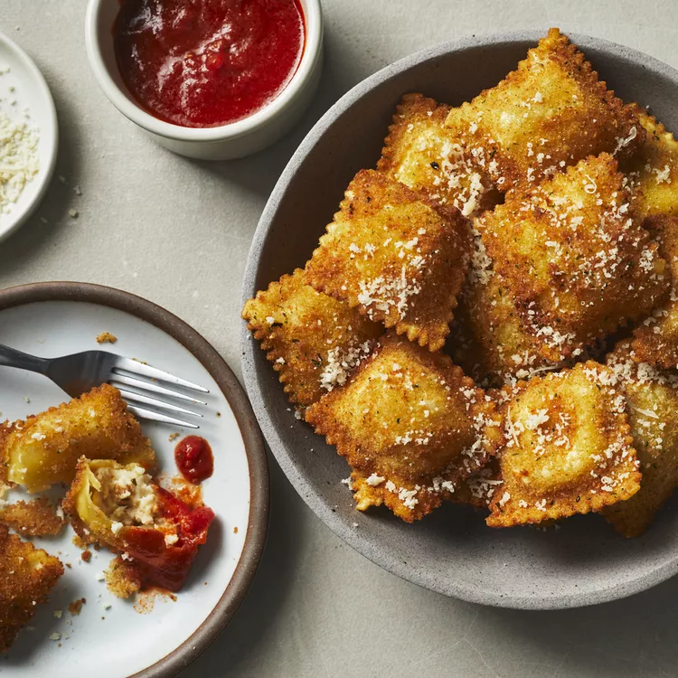

St. Louis Toasted Ravioli
Home

Toasted ravioli, St. Louis-style! This method of breading and frying ravioli is unique and delicious. The crisp, golden brown ravioli are dusted with Parmesan cheese and served with marinara sauce for dipping.
Ingredients :
- 1 (16 ounce) jar marinara sauce
- 1 large egg
- 2 tablespoons whole milk
- ¾ cup Italian seasoned bread crumbs
- ½ teaspoon salt (Optional)
- ½ (25 ounce) package frozen cheese ravioli, thawed
- 3 cups vegetable oil for frying, or as needed
- 1 tablespoon grated Parmesan cheese
Directions
- Gather all ingredients.
- Heat marinara sauce in a saucepan over medium heat until bubbling; reduce the heat to low and simmer until needed.
- Meanwhile, whisk egg and milk together in a small bowl. Whisk bread crumbs and salt together in a second small bowl.
- Dip each ravioli in the milk mixture, then in bread crumbs to coat.
- Heat 2 inches of oil in a large, heavy pan until a small amount of breading sizzles and turns brown. Fry ravioli, a few at a time, until golden, about 1 minute per side. Drain on paper towels.
- Sprinkle warm ravioli with Parmesan and serve immediately with hot marinara sauce on the side.